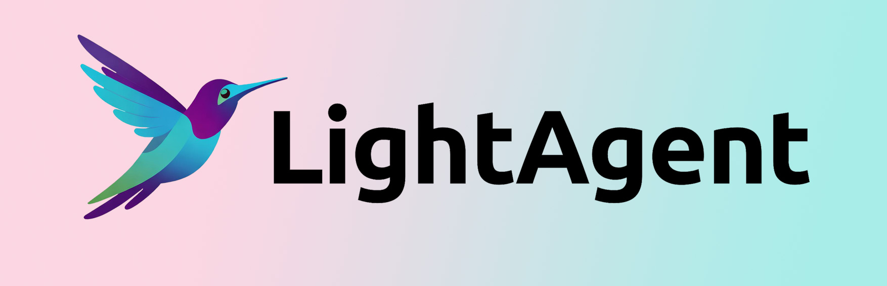

OPEN SOURCE / AI AGENT / SKILL READY
LightAgent：把 Skill、MCP、记忆和多智能体收进一个轻量框架
它的重点不是做一个更大的“全家桶”，而是保留一个小核心，再把 Skill、Memory、Tools/MCP、ToT、LightSwarm 和 LightFlow 连接成可插拔能力层，让 Agent 从“会回答”升级成“会完成任务”。
原生 Skill
MCP stdio / SSE
OpenAI-compatible
LightFlow v0.8
No LangChain / No LlamaIndex
